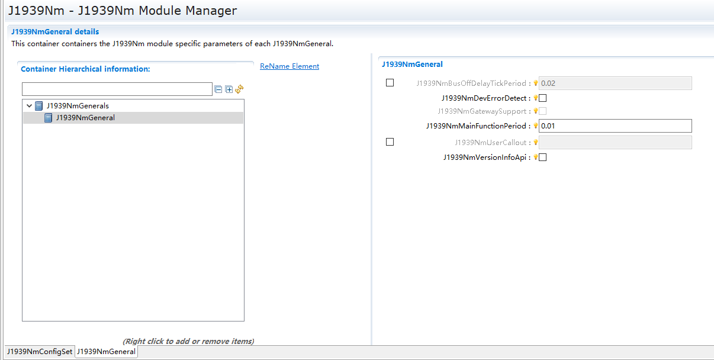
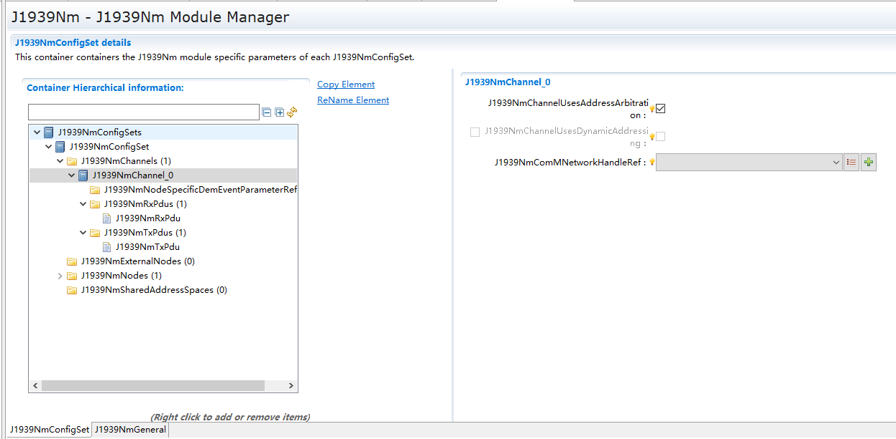
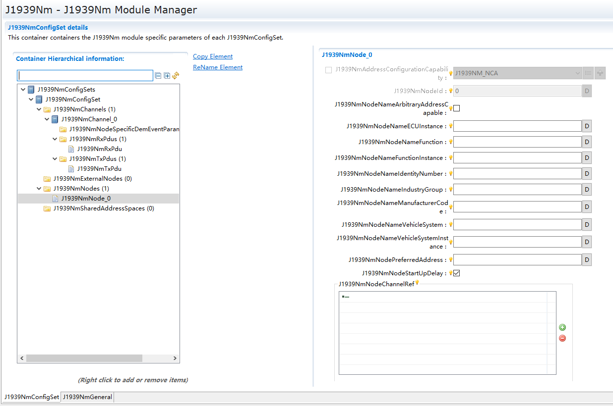

J1939Nm¶
文档信息(Document Information)¶
版本历史(Version History)¶
日期(Date) |
作者(Author) |
版本(Version) |
状态(State) |
说明(Explain) |
|---|---|---|---|---|
2025/03/07 |
Xue.Han |
V0.1 |
发布(Release) |
首次发布(First Release) |
2025/04/04 |
Xue.Han |
V1.0 |
发布发布(Release) |
正式发布(Official Release) |
2025/12/16 |
chao.sun |
V1.1 |
修正(Modify) |
调整文档架构和补充英文说明(Adjust the document structure and add English explanations) |
参考文档(References)¶
编号(Serial Number) |
分类(Classification) |
标题(Title) |
版本(Version) |
|---|---|---|---|
1 |
Glossary |
AUTOSAR_TR_Glossary.pdf |
R19-11 |
2 |
General Specification of Basic Software Modules |
AUTOSAR_SWS_BSWGeneral.pdf |
R19-11 |
3 |
SAE J1939-81 Network Management |
SAE J1939-81 Network Management.pdf |
R19-11 |
4 |
Layered Software Architecture |
AUTOSAR_EXP_LayeredSoftwareArchitecture.pdf |
R19-11 |
5 |
Specification of CAN Interface |
AUTOSAR_SWS_CANInterface.pdf |
R19-11 |
6 |
Specification of a Request Manager for SAE J1939 |
AUTOSAR_SWS_SAEJ1939RequestManager.pdf |
R19-11 |
7 |
Specification of Network Management |
AUTOSAR_SWS_NetworkManagement.pdf |
R19-11 |
8 |
Specification of Basic Software Mode Manager |
AUTOSAR_SWS_BSWModeManager.pdf |
R19-11 |
9 |
Specification of Diagnostic Event Manager |
AUTOSAR_SWS_DiagnosticEventManager.pdf |
R19-11 |
10 |
Specification of Default Error Tracer |
AUTOSAR_SWS_DefaultErrorTracer.pdf |
R19-11 |
11 |
Complex Driver design and integration guideline |
AUTOSAR_EXP_CDDDesignAndIntegrationGuideline.pdf |
R19-11 |
12 |
Specification of ECU Configuration |
AUTOSAR_TPS_ECUConfiguration.pdf |
R19-11 |
13 |
Specification of Communication Manager |
AUTOSAR_SWS_COMManager.pdf |
R19-11 |
14 |
Requirements on BSW Modules for SAE J1939 |
AUTOSAR_SRS_SAEJ1939.pdf |
R19-11 |
15 |
General Requirements on Basic Software Modules |
AUTOSAR_SRS_BSWGeneral.pdf |
R19-11 |
16 |
Specification of Communication Stack Types |
AUTOSAR_SWS_CommunicationStackTypes.pdf |
R19-11 |
17 |
Specification of Standard Types |
AUTOSAR_SWS_StandardTypes.pdf |
R19-11 |
18 |
List of Basic Software Modules |
AUTOSAR_TR_BSWModuleList.pdf |
R19-11 |
19 |
Specification of RTE Software |
AUTOSAR_SWS_RTE.pdf |
R19-11 |
20 |
System Template |
AUTOSAR_TPS_SystemTemplate.pdf |
R19-11 |
术语与缩略语(Terms and Abbreviations)¶
术语(Terms)¶
Node
缩略语(Abbreviations)¶
简写(Abbreviation) |
全称(Full Name) |
解释(Explanation) |
|---|---|---|
AC |
J1939 AddressClaimed PG (PGN = 0x0EE00) |
J1939 地址声明参数组（PGN = 0x0EE00），当 SA = 0xFE 时表示无法声明地址。 |
BSW |
Basic Software (module) |
基础软件（模块）。 |
BswM |
Basic Software Mode Manager |
基础软件模式管理器。 |
CanIf |
CAN Interface |
CAN 接口模块。 |
CDD |
Complex Driver, any software that interfaces directly with AUTOSAR BSW, but is not defined by AUTOSAR |
复杂驱动，直接与 AUTOSAR 基础软件接口但不由 AUTOSAR 定义的软件。 |
ComM |
Communication Manager |
通信管理器。 |
DA |
Destination Address |
目标地址。 |
DET |
Default Error Tracer, supports development and run-time error reporting |
默认错误跟踪器，支持开发和运行时错误报告。 |
DEM |
Diagnostic Event Manager, stores diagnostic events, including extended production errors |
诊断事件管理器，存储诊断事件，包括扩展的生产错误。 |
DP |
Data Page, the most significant bit (MSB) of the 18 bit PGN |
数据页，18 位 PGN 的最高有效位（MSB）。 |
EDP |
Extended Data Page, the second bit (after MSB) of the 18 bit PGN |
扩展数据页，18 位 PGN 的第二位（MSB 之后）。 |
J1939Nm |
SAE J1939 Network Management |
SAE J1939 网络管理。 |
J1939Rm |
SAE J1939 Request Manager |
SAE J1939 请求管理器。 |
NAME |
The 64 bit NAME of a Node |
节点的 64 位 NAME。 |
Node |
J1939 node - can be attached to more than one channel |
J1939 节点，可以连接到多个通道。 |
NodeChannel |
The connection of a node to one channel |
节点与一个通道的连接。 |
Nm |
Network Management Interface |
网络管理接口。 |
PDUF |
PDU Format, the middle byte of the 18 bit PGN |
PDU 格式，18 位 PGN 的中间字节。 |
PDUS |
PDU Specific, the lower byte of the 18 bit PGN |
PDU 特定，18 位 PGN 的低字节。 |
PG |
Parameter Group |
参数组。 |
PGN |
Parameter Group Number (18 bits, contains EDP, DP, PDUF, PDUS) |
参数组编号(18 位，包含 EDP、DP、PDUF、PDUS)。 |
RQST |
J1939 Request PG (PGN = 0x0EA00) |
J1939 请求参数组(PGN = 0x0EA00)。 |
RTE |
AUTOSAR Runtime Environment |
AUTOSAR 运行时环境。 |
SA |
Source Address |
源地址。 |
SchM |
Basic Software Schedule Manager, part of the RTE |
基础软件调度管理器，RTE 的一部分。 |
简介(Introduction)¶
J1939Nm实现了SAE J1939-81关于地址申明与仲裁的部分功能。在AutoSar中所处的位置如图所示(J1939Nm implements some of the functions related to address declaration and arbitration as stipulated in SAE J1939-81. The position of J1939Nm in AOTOSAR is shown in the figure below)：

J1939Nm模块层次图(J1939Nm Module Hierarchy Diagram)¶
功能描述(Functional Description)¶
公共特性(Public Features)¶
多核多分区功能(Multi-core and Multi-partition Features)¶
不支持。
Not supported.
PBS功能(PBS Features)¶
支持配置不同数量的J1939RmChannel通道。
Supports configuring different numbers of J1939RmChannel channels.
支持配置不同数量的J1939RmNode节点。
Supports configuring different numbers of J1939RmNode nodes.
支持配置同一节点下不同数量及配置的J1939RmUser用户信息。
Supports configuring J1939RmUser user information with different quantities and configurations under the same node.
支持配置各用户中的属性变体，如pgn信息。
Supports configuring attribute variants for each user, such as PGN information.
Memmap功能(Memmap Features)¶
memmap文件是动态的。存在J1939NM_START_SEC_CODE、J1939NM_STOP_SEC_CODE、J1939NM_START_SEC_CONFIG_DATA_UNSPECIFIED、J1939NM_STOP_SEC_CONFIG_DATA_UNSPECIFIED、J1939NM_START_SEC_VAR_CLEARED_8、J1939NM_STOP_SEC_VAR_CLEARED_8、J1939NM_START_SEC_VAR_CLEARED_UNSPECIFIED、J1939NM_STOP_SEC_VAR_CLEARED_UNSPECIFIED、J1939NM_START_SEC_VAR_CLEARED_PTR、J1939NM_STOP_SEC_VAR_CLEARED_PTR、J1939NM_START_SEC_VAR_CLEARED_BOOLEAN、J1939NM_STOP_SEC_VAR_CLEARED_BOOLEAN、J1939NM_START_SEC_VAR_INIT_UNSPECIFIED、J1939NM_STOP_SEC_VAR_INIT_UNSPECIFIED字段。
The memmap file is Dynamic.There are J1939NM_START_SEC_CODE、J1939NM_STOP_SEC_CODE、J1939NM_START_SEC_CONFIG_DATA_UNSPECIFIED、J1939NM_STOP_SEC_CONFIG_DATA_UNSPECIFIED、J1939NM_START_SEC_VAR_CLEARED_8、J1939NM_STOP_SEC_VAR_CLEARED_8、J1939NM_START_SEC_VAR_CLEARED_UNSPECIFIED、J1939NM_STOP_SEC_VAR_CLEARED_UNSPECIFIED、J1939NM_START_SEC_VAR_CLEARED_PTR、J1939NM_STOP_SEC_VAR_CLEARED_PTR、J1939NM_START_SEC_VAR_CLEARED_BOOLEAN、J1939NM_STOP_SEC_VAR_CLEARED_BOOLEAN、J1939NM_START_SEC_VAR_INIT_UNSPECIFIED and J1939NM_STOP_SEC_VAR_INIT_UNSPECIFIED fields.
独占区功能(Exclusive Area Features)¶
None.
模块特性(Module Features)¶
网络管理功能(Network management function)¶
J1939Nm相对于NmIf属于下层模块，其中的网络管理相对简单，对于网络管理状态图所示：
J1939Nm is a lower-level module compared to NmIf, and its network management is relatively simple. Regarding the network management state diagram shown:

J1939Nm内部状态图¶
网络管理功能用到的接口J1939Nm_NetworkRequest，J1939Nm_NetworkRelease，模块内关于AC的处理都在NM_MODE_NETWORK中，这两个接口由模块NmIf调用，J1939Nm的网络管理状态改变也会通知到NmIf与BswM，通知到NmIf是为了整个网络管理栈的运行，通知的接口包括Nm_BusSleepMode、Nm_NetworkMode、Nm_StateChangeNotification。网络管理从Release到Request将触发AC报文发送。通知BswM使用的接口BswM_J1939Nm_StateChangeNotification。通知到BswM可以实现基于配置的模式切换，典型应用是当AC声明成功250ms后启动设置J1939Dcm、Rm对应节点Online。
The interfaces used by the network management functions are J1939Nm_NetworkRequest and J1939Nm_NetworkRelease. The module's handling regarding AC is all in NM_MODE_NETWORK. These two interfaces are called by the NmIf module. Changes in the network management state of J1939Nm are also notified to NmIf and BswM. Notifying NmIf is for the operation of the entire network management stack, and the notified interfaces include Nm_BusSleepMode, Nm_NetworkMode, and Nm_StateChangeNotification. Transitioning from Release to Request in network management will trigger the sending of AC messages. The interface used to notify BswM is BswM_J1939Nm_StateChangeNotification. Notifying BswM can implement mode switching based on configuration. A typical application is to start setting J1939Dcm and bring the corresponding Rm node online 250ms after AC is successfully declared.
地址申明(Address Declaration)¶
地址申明实现了SAE J1939-81中的部分功能，包括主动发送AC报文，以及AC报文仲裁，但仲裁失败后不存在地址重选。J1939Nm中关于地址申明的内容以及源地址在SAE J1939-81中都有表明长度与位置，如图所示：
The address claim implements part of the functions in SAE J1939-81, including actively sending AC messages and AC message arbitration, but there is no address reassignment after arbitration failure. The content of address claim in J1939Nm and the source address are both specified in SAE J1939-81 in terms of length and position, as shown in the figure:

Name成员位置与分布图¶
Name值中的具体字段由整车厂统一规划；AC报文的源地址来源于工具配置项：J1939NmNodePreferredAddress；这地地址填充到AC报文发送以及决定这个Node上的J1939Dcm，J1939Request模块中的源地址选择；对应AC报文的发送，有如下几下场景：
The specific fields in the Name value are uniformly planned by the vehicle manufacturer; the source address of the AC message comes from the tool configuration item: J1939NmNodePreferredAddress; this address is filled into the AC message transmission and determines the source address selection in the J1939Dcm and J1939Request modules on this Node; regarding the transmission of the corresponding AC message, there are the following scenarios:
网络被请求，即上层模块调用J1939Nm_NetworkRequest。
The network is requested, that is, the upper layer module calls J1939Nm_NetworkRequest.
在Node网络Normal状态下，收到Request报文。
In the Normal state of the Node network, a Request message is received.
在Node网络Normal状态下，收到其他拥有相同源节点地址AC报文。
In the Normal state of the Node network, an AC message with the same source node address from others is received.
地址仲裁产生条件即Normal下，收到拥有相同源节点地址AC申明报文。在使用相同的源地址时（若优先级相同）在总线上的表现为存在两个Can Id相同的报文。在此情景下，Name 值越小表示拥有这个地址的优先级越高。对于仲裁场景可以参阅SAE J1939-81，此处选择一个典型的仲裁场景如图所示：
The conditions for address arbitration occur under Normal mode when a CAN message claiming the same source node address (AC) is received. When the same source address is used (if the priority is the same), the bus will display two messages with the same CAN ID. In this situation, a smaller Name value indicates a higher priority for the node with this address. For arbitration scenarios, refer to SAE J1939-81. Here, a typical arbitration scenario is selected as shown in the figure:

地址仲裁的典型场景图¶
对于地址仲裁失败后，节点的状态处于Ac Lost，则不应该用该地址发送任何报文。
If the address arbitration fails and the node's status is Ac Lost, no messages should be sent using that address.
偏差(Deviation)¶
暂未支持 J1939NmSharedAddressSpace 共享地址配置，J1939NmExternalNode外部节点配置。(J1939NmSharedAddressSpace shared address configuration and J1939NmExternalNode external node configuration are not supported yet.)
暂未支持 J1939NmGatewaySupport 。(J1939NmGatewaySupport is not supported yet.)
扩展(Extension)¶
None
集成(Integration)¶
文件列表(File List)¶
静态文件(Static Files)¶
文件(File) |
描述(Description) |
|---|---|
J1939Nm_Types.h |
J1939Nm 模块的类型定义文件；包括类型定义和需要使用的配置结构声明。(Type definition file for the J1939Nm module; includes type definitions and declarations of configuration structures that need to be used.) |
J1939Nm_MemMap.h |
包含 MemIf 模块的内存抽象定义。(Memory abstraction definition including the MemIf module.) |
J1939Nm_Internal.h |
J1939Nm 模块的 API 声明文件；包含需要使用的宏定义、内部函数和全局函数。(API declaration file for the J1939Nm module; includes the macros, internal functions, and global functions that need to be used.) |
J1939Nm.h |
J1939Nm 模块的 API 声明和宏定义文件；包括需要使用的宏定义和外部函数声明。(API declaration and macro definition file for the J1939Nm module; includes the macros to be used and external function declarations.) |
J1939Nm.c |
J1939Nm 模块的 API 实现文件。(API implementation file of the J1939Nm module.) |
动态文件(Dynamic file)¶
文件(File) |
描述(Description) |
|---|---|
J1939Nm_Cfg.h |
MemIf 模块实现所需的配置参数；包含需要使用的 API 信息。(Configuration parameters required for the implementation of the MemIf module; includes the API information that needs to be used.) |
J1939Nm_Externals.h |
回调函数的声明文件。(Declaration file for the callback function.) |
J1939Nm_Lcfg.h |
J1939Nm 模块的 Post Build 实现所需的配置宏定义和类型定义。(The configuration macros and type definitions required for the Post Build implementation of the J1939Nm module.) |
J1939Nm_Lcfg.c |
J1939Nm 模块实现所需的运行时配置参数。(Runtime configuration parameters required for the implementation of the J1939Nm module.) |
J1939Nm_PBcfg.h |
J1939Nm 模块的 Post Build 实现所需的配置宏定义和类型定义。(Configuration macros and type definitions required for the post-build implementation of the J1939Nm module.) |
J1939Nm_PBcfg.c |
J1939Nm 模块实现所需的 Post Build 配置参数。(Post-build configuration parameters required for the implementation of the J1939Nm module.) |
错误处理(Error Handling)¶
开发错误(Development Errors)¶
Error code |
Value[hex] |
Description |
|---|---|---|
J1939NM_E_UNINIT |
0x01 |
模块未初始化时调用了 API。(The API was called before the module was initialized.) |
J1939NM_E_REINIT |
0x02 |
Init API 被调用了两次。(The Init API was called twice.) |
J1939NM_E_INIT_FAILED |
0x03 |
J1939Nm_Init 被调用时传入了一个无效的配置指针。(An invalid configuration pointer was passed when J1939Nm_Init was called.) |
J1939NM_E_PARAM_POINTER |
0x10 |
调用 API 服务时传入了一个空指针。(A null pointer was passed when calling the API service.) |
J1939NM_E_INVALID_PDU_SDU_ID |
0x11 |
调用 API 服务时传入了一个错误的 ID。(An incorrect ID was passed when calling the API service.) |
J1939NM_E_INVALID_NETWORK_ID |
0x12 |
调用 API 服务时传入了一个错误的网络句柄。(An incorrect network handle was passed when calling the API service.) |
J1939NM_E_INVALID_PGN |
0x13 |
调用 API 时传入了一个不支持的 PGN。(An unsupported PGN was passed in when calling the API.) |
J1939NM_E_INVALID_PRIO |
0x14 |
调用 API 时传入了一个非法的优先级。(An invalid priority was passed when calling the API.) |
J1939NM_E_INVALID_ADDRESS |
0x15 |
调用 API 时传入了一个非法的节点地址。(An invalid node address was passed when calling the API.) |
J1939NM_E_INVALID_NODE |
0x16 |
调用 API 时传入了一个非法的节点 ID。(An invalid node ID was passed when calling the API.) |
产品错误(Product Errors)¶
None
运行时错误(Runtime Errors)¶
None
API接口描述(API Interface Description)¶
数据类型定义 (Data Type definition)¶
Std_VersionInfoType类型定义 (Std_VersionInfoType type definition)¶
名称 (Name) |
Std_VersionInfoType |
|---|---|
类型 (Type) |
Structure |
定义 (Define) |
typedef struct |
{ |
|
uint16 vendorID; |
|
uint16 moduleID; |
|
uint8 instanceID; |
|
uint8 sw_major_version; |
|
uint8 sw_minor_version; |
|
uint8 sw_patch_version; |
|
} Std_VersionInfoType; |
|
范围 (Range) |
无 |
描述 (Description) |
用于描述软件版本信息的结构体类型 (Struct type for describing software version information) |
Std_ReturnType类型定义 (Std_ReturnType Type Definition)¶
名称 (Name) |
Std_ReturnType |
|---|---|
类型 (Type) |
uint8 |
定义 (Define) |
typedef uint8 PduIdType; |
范围 (Range) |
0 … 255 |
描述 (Description) |
用于定义J1939Nm模块的函数返回值的派生数据类型 (Data types derived for describing API return value in J1939Nm) |
NetworkHandleType类型定义 (NetworkHandleType Type Definition)¶
名称 (Name) |
NetworkHandleType |
|---|---|
类型 (Type) |
uint8 |
定义 (Define) |
typedef uint8 NetworkHandleType; |
范围 (Range) |
0 … 255 |
描述 (Description) |
用于定义J1939Nm模块的网络处理的派生数据类型 (Data types derived for describing network handle in J1939Nm) |
PduIdType类型定义 (PduIdType Type Definition)¶
名称 (Name) |
PduIdType |
|---|---|
类型 (Type) |
uint16 |
定义 (Define) |
typedef uint16 PduIdType; |
范围 (Range) |
0 … 65535 |
描述 (Description) |
用于定义J1939Tp模块的PDU标识符的派生数据类型 (Data types derived for describing PDU identifier in J1939Tp) |
PduLengthType类型定义 (PduLengthType Type Definition)¶
名称 (Name) |
PduLengthType |
|---|---|
类型 (Type) |
uint16 |
定义 (Define) |
typedef uint16 PduLengthType; |
范围 (Range) |
0 … 65535 |
描述 (Description) |
用于定义J1939Tp模块的PDU长度的派生数据类型 (Data types derived for describing PDU length in J1939Tp) |
Dem_EventIdType类型定义 (Dem_EventIdType Type Definition)¶
名称 (Name) |
Dem_EventIdType |
|---|---|
类型 (Type) |
uint16 |
定义 (Define) |
typedef uint16 Dem_EventIdType; |
范围 (Range) |
0 … 65535 |
描述 (Description) |
用于定义Dem模块的事件标识符的派生数据类型 (Data types derived for describing event identifier in Dem) |
Dem_EventStatusType类型定义 (Dem_EventStatusType Type Definition)¶
名称 (Name) |
Dem_EventIdType |
|---|---|
类型 (Type) |
uint8 |
定义 (Define) |
typedef uint8 Dem_EventStatusType; |
范围 (Range) |
0 … 255 |
描述 (Description) |
用于定义Dem模块的事件状态的派生数据类型 (Data types derived for describing event status in Dem) |
J1939Rm_ExtIdType类型定义 (J1939Rm_ExtIdType Type Definition)¶
名称 (Name) |
J1939Rm_ExtIdType |
|---|---|
类型 (Type) |
uint8 |
定义 (Define) |
typedef uint8 J1939Rm_ExtIdType; |
范围 (Range) |
0 … 255 |
描述 (Description) |
用于定义J1939Rm模块的扩展标识符的派生数据类型 (Data types derived for describing extended identifier in J1939Rm) |
J1939Rm_ExtIdInfoType类型定义 (J1939Rm_ExtIdInfoType Type Definition)¶
名称 (Name) |
J1939Rm_ExtIdInfoType |
|---|---|
类型 (Type) |
Structure |
定义 (Define) |
typedef struct |
{ |
|
J1939Rm_ExtIdType extIdType; |
|
uint8 extId1; |
|
uint8 extId2; |
|
uint8 extId3; |
|
} J1939Rm_ExtIdInfoType; |
|
范围 (Range) |
无 |
描述 (Description) |
用于描述J1939Rm模块存储扩展标识符信息的结构体类型 (Struct type for describing store extended identifier information in J1939Rm) |
PduInfoType类型定义 (PduInfoType Type Definition)¶
名称 (Name) |
PduInfoType |
|---|---|
类型 (Type) |
Structure |
定义 (Define) |
typedef struct |
{ |
|
uint8* SduDataPtr; |
|
uint8* MetaDataPtr; |
|
PduLengthType SduLength; |
|
} PduInfoType; |
|
范围 (Range) |
无 |
描述 (Description) |
用于描述J1939Nm模块存储PDU信息的结构体类型 (Struct type for describing store PDU information in J1939Tp) |
Nm_ModeType类型定义 (Nm_ModeType Type Definition)¶
名称 (Name) |
Nm_ModeType |
|---|---|
类型 (Type) |
Enumeration |
范围 (Range) |
NM_MODE_BUS_SLEEP = 0U |
NM_MODE_PREPARE_BUS_SLEEP = 1U |
|
NM_MODE_SYNCHRONIZE = 2U |
|
NM_MODE_NETWORK = 3U |
|
描述 (Description) |
用于定义Nm模块的模式分类的枚举类型 (Enumerated type for store the Classification of mode in J1939Rm) |
Nm_StateType类型定义 (Nm_StateType Type Definition)¶
名称 (Name) |
Nm_StateType |
|---|---|
类型 (Type) |
Enumeration |
范围 (Range) |
NM_STATE_UNINIT = 0U |
NM_STATE_BUS_SLEEP = 1U |
|
NM_STATE_PREPARE_BUS_SLEEP = 2U |
|
NM_STATE_READY_SLEEP = 3U |
|
NM_STATE_NORMAL_OPERATION = 4U |
|
NM_STATE_REPEAT_MESSAGE = 5U |
|
NM_STATE_SYNCHRONIZE = 6U |
|
NM_STATE_OFFLINE = 7U |
|
描述 (Description) |
用于定义Nm模块的状态分类的枚举类型 (Enumerated type for store the Classification of state in Nm) |
输入函数描述 (Describe the input function:)¶
输入模块 (Input Module) |
API |
|---|---|
CanIf |
CanIf_Transmit |
Det |
Det_ReportError |
Det |
Det_ReportRuntimeError |
BswM |
BswM_J1939Nm_StateChangeNotification |
Dem |
Dem_SetEventStatus |
Nm |
Nm_BusSleepMode |
Nm |
Nm_NetworkMode |
NA |
User_AddressClaimedIndication |
NA |
Nm_StateChangeNotification |
静态接口函数定义 (Static interface function definition)¶
J1939Nm_Init¶
void J1939Nm_Init(const J1939Nm_ConfigType *configPtr)
Service for basic initialization of J1939Nm module.
- Sync/Async
Synchronous
- Reentrancy
Non Reentrant.
Parameters
Dir |
Name |
Description |
|---|---|---|
[in] |
configPtr |
Pointer to configuration set in Variant Post-Build. |
- Return type
void
J1939Nm_DeInit¶
void J1939Nm_DeInit(void)
This function resets J1939Nm to the uninitialized state.
- Sync/Async
Synchronous
- Reentrancy
Non Reentrant.
- Return type
void
J1939Nm_GetVersionInfo¶
void J1939Nm_GetVersionInfo(Std_VersionInfoType *versionInfo)
Returns the version information of this module.
- Sync/Async
Synchronous
- Reentrancy
Non Reentrant.
Parameters
Dir |
Name |
Description |
|---|---|---|
[in] |
versionInfo |
Pointer to version information. |
- Return type
void
J1939Nm_NetworkRequest¶
Std_ReturnType J1939Nm_NetworkRequest(NetworkHandleType nmChannelHandle)
Request the network, since ECU needs to communicate on the bus.
- Sync/Async
Synchronous
- Reentrancy
Reentrant,but not for the same NM-Channel
Parameters
Dir |
Name |
Description |
|---|---|---|
[in] |
nmChannelHandle |
Identification of the NM-channel. |
- Return type
Std_ReturnType
Return values
Name |
Description |
|---|---|
E_OK |
No error |
E_NOT_OK:Requesting |
of network has failed |
J1939Nm_NetworkRelease¶
Std_ReturnType J1939Nm_NetworkRelease(NetworkHandleType nmChannelHandle)
Release the network, since ECU doesn't have to communicate on the bus.
- Sync/Async
Asynchronous
- Reentrancy
Reentrant but not for the same NM-Channel
Parameters
Dir |
Name |
Description |
|---|---|---|
[in] |
nmChannelHandle |
Identification of the NM-channel. |
- Return type
Std_ReturnType
Return values
Name |
Description |
|---|---|
E_OK |
No error |
E_NOT_OK:Releasing |
of network has failed |
J1939Nm_GetState¶
Std_ReturnType J1939Nm_GetState(NetworkHandleType NetworkHandle, Nm_StateType *nmStatePtr, Nm_ModeType *nmModePtr)
Returns the state and the mode of the network management.
- Sync/Async
Synchronous
- Reentrancy
Reentrant
Parameters
Dir |
Name |
Description |
|---|---|---|
[in] |
NetworkHandle |
Identification of the NM-channel. |
[out] |
nmStatePtr |
Pointer where state of the network management shall be copied to. |
[out] |
nmModePtr |
Pointer where the mode of the network management shall be copied to. |
- Return type
Std_ReturnType
Return values
Name |
Description |
|---|---|
E_OK |
No error |
E_NOT_OK:Getting |
of NM state has failed. |
J1939Nm_GetBusOffDelay¶
void J1939Nm_GetBusOffDelay(NetworkHandleType network, uint8 *delayCyclesPtr)
This callout function returns the number of CanSM base cycles to wait additionally to L1/L2 after a BusOff occurred.
- Sync/Async
Synchronous
- Reentrancy
Reentrant for different networks
Parameters
Dir |
Name |
Description |
|---|---|---|
[in] |
network |
CAN network where a BusOff occurred. |
[out] |
delayCyclesPtr |
Number of CanSM base cycles to wait additionally to L1/L2 after a BusOff occurred. |
- Return type
void
J1939Nm_PassiveStartUp¶
Std_ReturnType J1939Nm_PassiveStartUp(NetworkHandleType nmChannelHandle)
Passive startup of the NM. It triggers the transition from Bus-Sleep Mode to the Network Mode without requesting the network.
- Sync/Async
Synchronous
- Reentrancy
Reentrant but not for the same NM-Channel
Parameters
Dir |
Name |
Description |
|---|---|---|
[in] |
nmChannelHandle |
Identification of the NM-channel. |
- Return type
Std_ReturnType
Return values
Name |
Description |
|---|---|
E_OK |
No error |
E_NOT_OK:Passive |
startup of network management has failed. |
J1939Nm_RxIndication¶
void J1939Nm_RxIndication(PduIdType RxPduId, const PduInfoType *PduInfoPtr)
Indication of a received PDU from a lower layer communication interface module.
- Sync/Async
Synchronous
- Reentrancy
Reentrant for different PduIds. Non reentrant for the same PduId.
Parameters
Dir |
Name |
Description |
|---|---|---|
[in] |
RxPduId |
ID of the received PDU. |
[in] |
PduInfoPtr |
Contains the length (SduLength) of the received PDU, a pointer to a buffer (SduDataPtr) containing the PDU, and the MetaData related to this PDU. |
- Return type
void
J1939Nm_TxConfirmation¶
void J1939Nm_TxConfirmation(PduIdType TxPduId, Std_ReturnType result)
The lower layer communication interface module confirms the transmission of a PDU, or the failure to transmit a PDU.
- Sync/Async
Synchronous
- Reentrancy
Reentrant for different PduIds. Non reentrant for the same PduId.
Parameters
Dir |
Name |
Description |
|---|---|---|
[in] |
TxPduId |
ID of the PDU that has been transmitted. |
[in] |
result |
E_OK: The PDU was transmitted. E_NOT_OK: Transmission of the PDU failed. |
- Return type
void
J1939Nm_RequestIndication¶
void J1939Nm_RequestIndication(uint8 node, NetworkHandleType channel, uint32 requestedPgn, const J1939Rm_ExtIdInfoType *extIdInfo, uint8 sourceAddress, uint8 destAddress, uint8 priority)
Indicates reception of a Request or Request2 PG.
- Sync/Async
Synchronous
- Reentrancy
Reentrant
Parameters
Dir |
Name |
Description |
|---|---|---|
[in] |
node |
Node by which the request was received. |
[in] |
channel |
Channel on which the request was received. |
[in] |
requestedPgn |
PGN of the requested PG. |
[in] |
extIdInfo |
Extended identifier bytes. |
[in] |
sourceAddress |
Address of the node that sent the Request PG. |
[in] |
destAddress |
Address of this node or 0xFF for broadcast. |
[in] |
priority |
Priority of the Request PG. |
- Return type
void
J1939Nm_MainFunction¶
void J1939Nm_MainFunction(void)
Main function of the J1939Nm. Used for scheduling purposes and timeout supervision.
- Sync/Async
Synchronous
- Reentrancy
Non Reentrant
- Return type
void
可配置回调函数（Configurable callback function）¶
J1939Nm_MainFunction¶
void J1939Nm_MainFunction_<ComMChannel.ShortName>(void)
This function shall perform the processing of the AUTOSAR J1939Nm activities that are not directly initiated by the calls e.g. from the RTE. There shall be one dedicated Main Function for each channel of J1939Nm.
- Sync/Async
Synchronous
- Reentrancy
Non Reentrant
- Return type
void
配置(Configuration)¶
J19939Nmeneral配置(J19939Nmeneral Configuration)¶

J1939Nm General Configuration¶
常规参数配置列表(List of standard parameter configurations)¶
参数名称(Parameter Name) |
参数范围(Parameter range) |
默认取值(Default value) |
参数描述(Parameter Description) |
依赖关系(Dependency) |
|---|---|---|---|---|
J1939NmBusOffDelayTickPeriod |
0..INF |
0.02 |
因地址冲突造成的 BusOff 需要的额外延时 tick。(Additional delay ticks required for BusOff caused by address conflicts.) |
CanSmBusOff 扩展延时于 J1939Nm 联动时，此值需要与 CanSm 的 main function 周期一致。(When the CanSmBusOff extended delay is linked with J1939Nm, this value needs to be consistent with the CanSm main function cycle.) |
J1939NmDevErrorDetect |
true/false |
false |
是否使能 Det 检测机制。(Whether to enable the Det detection mechanism.) |
依赖于 Det 模块的支持。(Depends on support from the Det module.) |
J1939NmMainFunctionPeriod |
0..INF |
0.01 |
J1939Nm_MainFunction 调用周期。(J1939Nm_MainFunction call cycle.) |
取值需要大于 0。(The value must be greater than 0.) |
J1939NmTxConfirmationTimeout |
0..65.535 |
0 |
TxConf 超时时间。(TxConf timeout.) |
无(None) |
J1939NmUserCallout |
string |
无(None) |
User_AddressClaimedIndication 函数名。(Function name: User_AddressClaimedIndication.) |
无(None) |
J1939NmVersionInfoApi |
true/false |
false |
是否使能获取模块软件版本。(Enable or disable obtaining the module software version.) |
无(None) |
J1939NmChannel配置(J1939NmChannel Configuration)¶

J1939Channel配置图¶
如图 J1939Channel配置图，J1939Nm支持配置多个J1939NmChannels,决定该通道上的节点是否主动发送 AC 报文，收发用到的RxPdu，TxPdu以及ComM channel 映射。
As shown in the figure J1939Channel配置图, J1939Nm supports the configuration of multiple J1939NmChannels, which determine whether the nodes on the channel actively send AC messages, and the mapping of RxPdu, TxPdu, and ComM channels used for transmission and reception.
参数名称(Parameter Name) |
参数范围(Parameter range) |
默认取值(Default value) |
参数描述(Parameter Description) |
依赖关系(Dependency) |
|---|---|---|---|---|
J1939NmChannelUsesAddressArbitration |
true/false |
true |
此通道上的节点是否主动发送 AC 报文；(Do the nodes on this channel actively send AC messages) - true：节点主动发送 AC 报文并对收到的 AC 报文做出反应；(The node actively sends AC messages and responds to the received AC messages.) - false：节点发送 AC 报文只能通过 Request 方式，且不对收到的 AC 报文进行处理。(Nodes can only send AC messages using the Request method and do not process received AC messages.) |
无(None) |
J1939NmComMNetworkHandleRef |
索引[ComMChannel](Index [ComMChannel]) |
无(None) |
当前 Channel 对应的 ComM channel。(The ComM channel corresponding to the current Channel.) |
ComM 必须有 Channel 配置。(ComM must have a Channel configuration.) |
J1939NmRxPduRef |
索引[Pdu](Index [Pdu]) |
无(None) |
当前 Channel 接收的 PDU。(The PDU currently received by the Channel.) |
该 PDU 应在 CanIf 中有引用，且与 J1939NmTxPduRef 不能一致。(This PDU should be referenced in CanIf and must not be the same as J1939NmTxPduRef.) |
J1939NmTxPduRef |
索引[Pdu](Index [Pdu]) |
无(None) |
当前 Channel 用于发送 AC 的 PDU。(The current channel is used to send AC PDUs.) |
该 PDU 应在 CanIf 中有引用。(This PDU should be referenced in CanIf.) |
J1939NmNode配置(J1939NmNode Configuration)¶

J1939NmNode配置图¶
如图 J1939NmNode配置图,主要配置AC报文的Name值，Name值中的具体字段由整车厂统一规划。其中AC报文的源地址来源于配置项：J1939NmNodePreferredAddress；这地地址填充到AC报文发送以及决定这个Node上J1939Dcm、J1939Rm模块中的源地址选择。
As shown in the figure J1939NmNode配置图, it mainly configures the Name value of the AC message. The specific fields in the Name value are planned uniformly by the vehicle manufacturer. The source address of the AC message comes from the configuration item: J1939NmNodePreferredAddress; this address is filled into the AC message when sending and determines the source address selection in the J1939Dcm and J1939Rm modules on this Node.
参数名称(Parameter Name) |
参数范围(Parameter range) |
默认取值(Default value) |
参数描述(Parameter Description) |
依赖关系(Dependency) |
|---|---|---|---|---|
J1939NmNodeId |
string |
无 |
Node 的 ID。(The ID of the node.) |
根据 Node 顺序自动生成。(Automatically generated according to Node order.) |
J1939NmNodeNameArbitraryAddressCapable |
true/false |
false |
对应 NAME 填充字段的 Arbitrary Address Capable。(Arbitrary Address Capable corresponding to the NAME fill-in field.) |
无(None) |
J1939NmNodeNameECUInstance |
0...7 |
0 |
对应 NAME 填充字段的 ECU Instance。(The ECU Instance corresponding to the NAME field.) |
无(None) |
J1939NmNodeNameFunction |
0 .. 255 |
0 |
对应 NAME 填充字段的 Function。(Function corresponding to the NAME fill field.) |
无(None) |
J1939NmNodeNameFunctionInstance |
0...31 |
0 |
对应 NAME 填充字段的 Function Instance。(The Function Instance corresponding to the NAME field.) |
无(None) |
J1939NmNodeNameIdentityNumber |
0 .. 2097151 |
0 |
对应 NAME 填充字段的 Identity Number。(The Identity Number corresponding to the NAME field.) |
无(None) |
J1939NmNodeNameIndustryGroup |
0...7 |
0 |
对应 NAME 填充字段的 Industry Group。(The Industry Group corresponding to the NAME field.) |
无(None) |
J1939NmNodeNameManufacturerCode |
0 .. 2047 |
0 |
对应 NAME 填充字段的 Manufacturer Code。(Manufacturer Code corresponding to the NAME fill-in field.) |
无(None) |
J1939NmNodeNameVehicleSystem |
0 .. 127 |
0 |
对应 NAME 填充字段的 Vehicle System。(The Vehicle System corresponding to the NAME field.) |
无(None) |
J1939NmNodeNameVehicleSystemInstance |
0 .. 15 |
0 |
对应 NAME 填充字段的 Vehicle System Instance。(The Vehicle System Instance corresponding to the NAME fill-in field.) |
无(None) |
J1939NmNodePreferredAddress |
0 .. 253 |
0 |
AC 声明使用的源地址。(The source address used by the AC declaration.) |
无(None) |
J1939NmNodeStartUpDelay |
true/false |
true |
AC 声明后是否延时 250s 才通讯。(Whether communication occurs at 250 seconds after the AC declaration.) |
无(None) |
J1939NmNodeChannelRef |
索引[J1939NmChannel](Index [J1939NmChannel]) |
无(None) |
当前 Node 归属的 J1939Nm Channel。(The J1939Nm Channel currently associated with the Node.) |
无(None) |